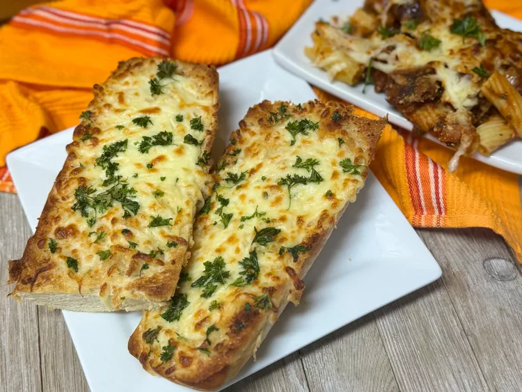

Garlic Bread

Description
This cheesy garlic bread is as simple and straightforward as a cheesy garlic bread should be. Serve with your favorite pasta dish or with soup.
Ingredients
- 1 (14 ounce) loaf French bread, cut in half horizontally, then halved again vertically
- 8 tablespoons unsalted butter, melted
- 1 teaspoon garlic powder
- 1/2 cup grated Parmesan-Romano cheese blend
- 1 cup shredded mozzarella cheese
- 1/4 cup chopped chopped parsley
Directions
- Preheat the oven's broiler to Low. Place bread slices face up on a baking sheet; brush melted butter over tops.
- Divide garlic powder, Parmesan blend, and mozzarella evenly between slices, in that order.
- Place baking sheet on the middle rack. Broil on low until golden and bubbly, about 9 minutes. Sprinkle with chopped parsley.